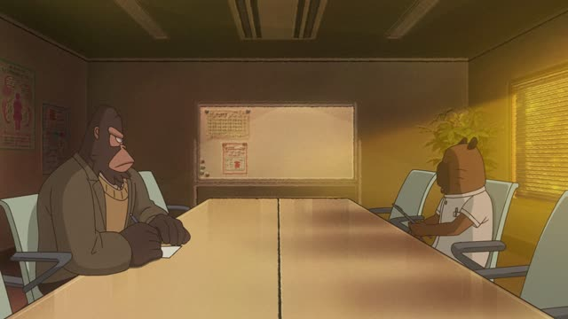
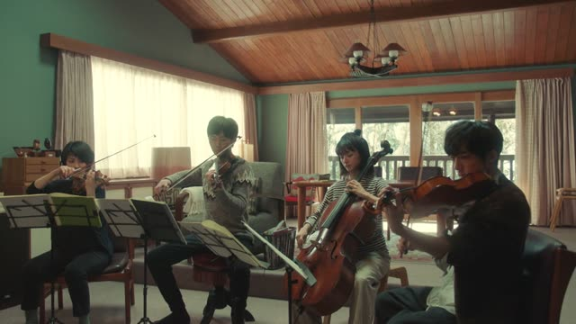
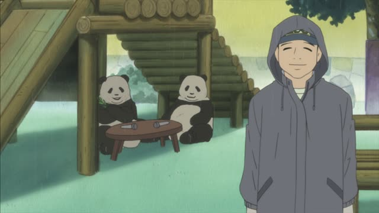
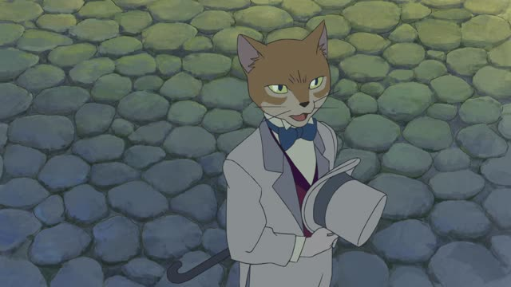
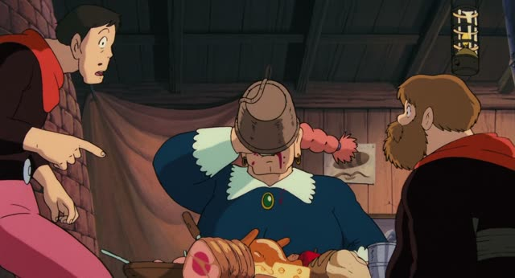
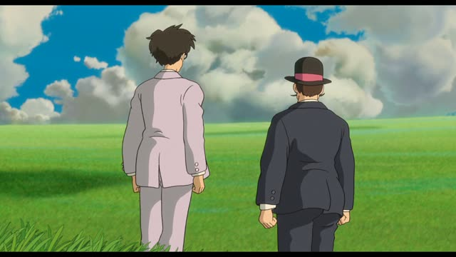

～のように・～のような
Death Note · Episode 7
そう、あなたのような人が必要なんです。
"Yes, we need someone like you."
のような and のように both mean "like A". After a noun, add の first: 風のような人, "a person like the wind".
Use のような before a noun (あなたのような人) and のように before a verb or an adjective (少女のように繊細). On this card, Light asks Naomi to join the investigation: they need a person like her. なんです makes it polite.
You'll also hear みたいな and みたいに: same meaning, more casual.
Sakamoto Days · Episode 2
少女のように繊細だな。
"You're as touchy as a little girl."
On this card, an enemy mocks Shin. のように goes before an adjective here: 繊細, "delicate, sensitive".
Quick Examples
Your friend's apartment is spotless.
ホテルのような部屋だね。
"It's like a hotel room."
Before a noun: のような.
CasualYour coworker swims really fast.
魚のように泳ぎますね。
"You swim like a fish."
Before a verb: のように.
PoliteDescribing a kind teacher.
田中先生は母のような人です。
"Tanaka-sensei is like a mother to me."
PoliteAfter a great vacation.
夢のように楽しかった。
"It was fun, like a dream."
Before an adjective: のように.
CasualWith and without
田中さんは先生です。
"Tanaka-san is a teacher." He really is one.
田中さんは先生のような人です。
"Tanaka-san is like a teacher." He isn't one, he just seems like it.
Examples from Media

Odd Taxi · Episode 11
本人に関する情報、まあ、日記のようなものですね。
"Information about himself. Kind of like a diary."
のようなもの = something like.

Quartet · Episode 10
皆さんの音楽は、煙突から出た煙のようなものです。
"Your music is like smoke from a chimney."
Read out from a letter.
Goblin Slayer · Episode 4
塔のような造りなんでしょうか。
"Is it built like a tower?"
The tunnel goes round and round, like inside a tower.

Shirokuma Cafe · Episode 12
まるでデートの達人のようなセリフだね。
"Sounds just like something a dating expert would say."
まるで = "just like", often in front of のような.
Samurai Champloo · Episode 18
鈴の音のような声がスイートだ。
"Her voice, like a little bell, is sweet."

The Cat Returns
私や彼のようにね。
"Like me and him."
Things made with love get a heart of their own, the Baron says.

Castle in the Sky
ママのようになるの？あの子。
"Will she turn out like Mom, that girl?"
のようになる = become like.

The Wind Rises
美しい風のような人だ。
"She's like a beautiful wind."
Caproni about Nahoko.
Further Reading
Tae Kim's Guide to Japanese Grammar
Similarity or hearsay · Expressing similarity with よう